기본정보
- 출시 : 한국 발매일 2007.03.08
- 개발 : 닌텐도
- 장르 : 액션 플랫포머
- 등급 : 전체 이용가
- 플랫폼 : 닌텐도 DS
게임플레이
스토리
사건 발생!! 마리오와 피크닉을 즐기던 피치공주가 누군가에게 납치됐습니다.
"버섯성에서 연기가 피어올랐어. 깜짝놀라서 버섯성 근처에 다녀왔더니 그 사이 피치공주가 납치당했지 뭐야!"
대체 누가 피치공주를 납치한 것일까? 거대버섯의 힘을 빌려, 마리오의 모험이 시작됩니다.
8개의 월드를 탐험하고 클리어

총 8개의 월드와 80개의 스테이지로 구성되어있습니다.
월드마다 개성있는 테마를 가지고 있으며 새로운 기믹이 추가됩니다.
스테이지 목록 펼치기
1. 평원
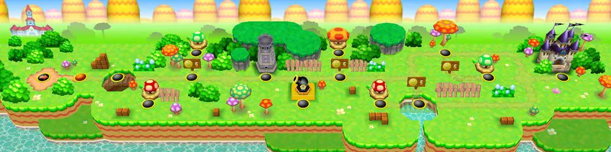
2. 사막
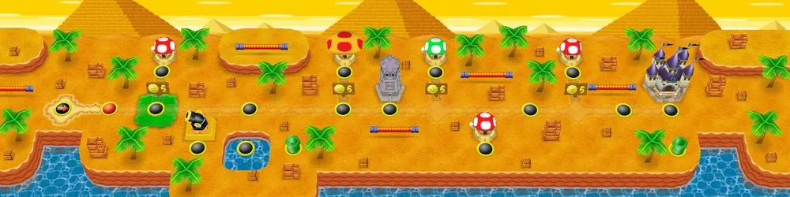
3. 해변
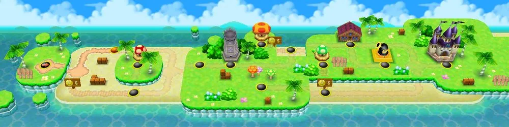
4. 숲
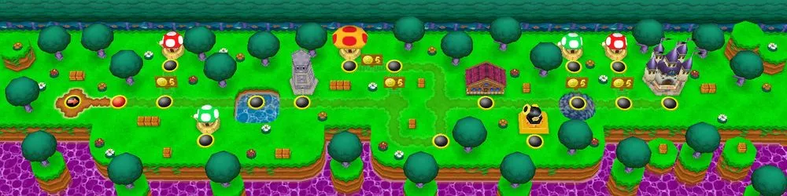
5. 설원
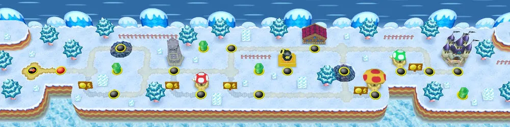
6. 산맥
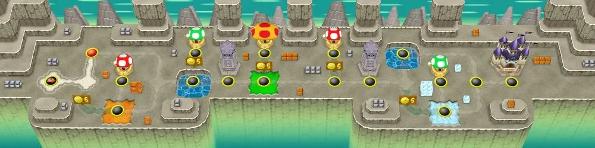
7. 하늘
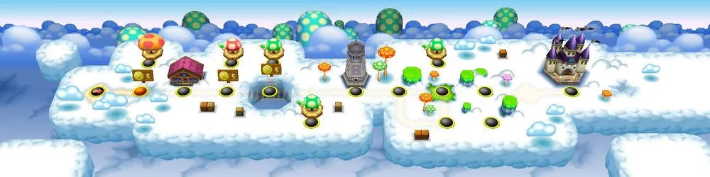
8. 쿠파 성
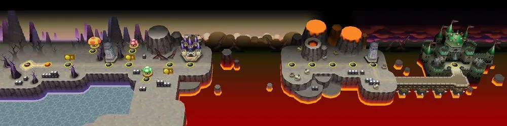
스테이지 내부에 다양한 아이템
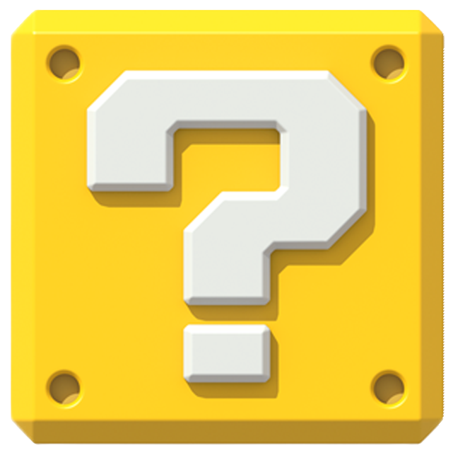
스테이지 안에 랜덤 박스가 존재합니다. 이 랜덤박스 안에서는
게임의 플레이를 돕는 다양한 아이템이 등장합니다.
슈퍼버섯
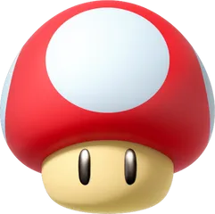
스테이지 안에서 마리오는 몸집이 작은 꼬마리오가 기본 형태이나 이 버섯을 획득하게 되면 몸집이 커지면서 슈퍼마리오가 됩니다.
슈퍼마리오 상태에서는 몬스터와 닿아도 바로 게임오버되지 않고 버섯을 먹기 전단계인꼬마리오로 돌아가게 됩니다.
꼬마리오 상태에서 몬스터와 닿게되면<해당 스테이지를 처음부터 다시 진행해야합니다.
파이어플라워
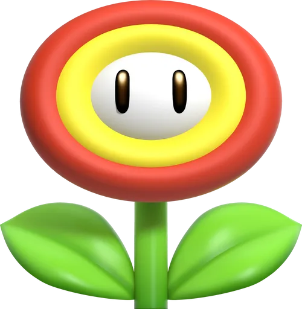
마리오가 이 아이템을 먹게되면 파이어마리오로 변신할 수 있습니다.
이 상태에서는 닌텐도의 'B' 버튼을 눌러 불꽃을 던질 수 있으며, 이 불꽃에 맞은 적은 쓰러지게 됩니다.
파이어마리오 상태에서 적에게 닿게 되면 슈퍼마리오가 됩니다.
거대버섯
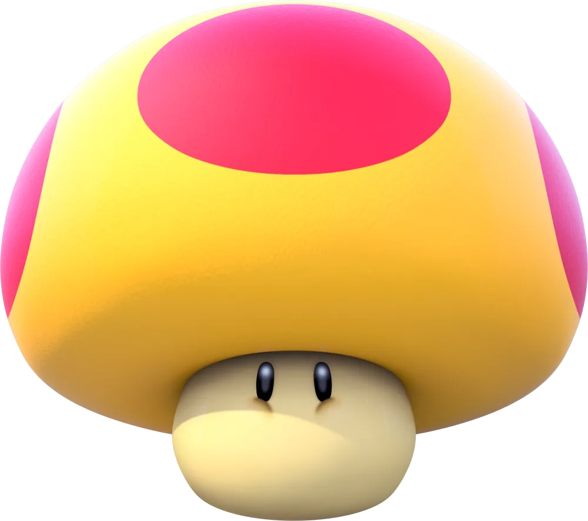
마리오가 이 아이템을 먹게되면 거대마리오로 변신하게 됩니다.
이 상태에서는 닌텐도의 이 상태에서는 마리오의 크기가 닌텐도 DS 화면의 크기의 2/3을 채울 정도로 거대해집니다.
낙사, 타임오버 등을 제외한 거의 모든 요소들에 대해 무적이며 블록, 토관, 적들을 날려버릴 수 있습니다.
땅콩버섯
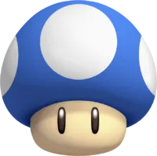
마리오가 이 아이템을 먹게되면 땅콩마리오로 변신할 수 있습니다.
이 상태에서는 꼬마리오보다 크기가 작아지며 몬스터에게 취약해지지만
점프력과 속도가 높고, 떨어지는데에 걸리는 시간이 늘어나 스테이지를 쉽게 통과하거나
일반 마리오의 모습으로는 갈 수 없는 히든맵에 들어갈 수 있습니다.
슈퍼스타
마리오가 이 아이템을 먹게되면 지속시간동안 무적이 되며, 닿는 적은 바로 쓰러지게 됩니다.
파랑등껍질
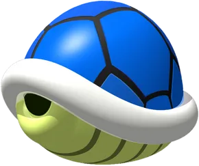
마리오가 이 아이템을 먹게되면 등껍질마리오로 변신할 수 있습니다.
일정 속도에 도달하게 되면 등껍질 안에 들어가 이동할 수 있으며, 이 상태에서 적과 닿을경우 적은 쓰러집니다.
이 아이템들의 도움을 받아 스테이지 끝에 도달하면 해당 스테이지를 클리어하게 되고,
다음 스테이지로 넘어갈 수 있습니다.
스토리 클리어 뿐만이 아닌, 간단한 미니게임들
월드를 클리어하는 컨텐츠 뿐만이 아닌 간단한 미니게임들을 즐길 수 있는 컨텐츠가
마련되어있습니다. 액션, 퍼즐, 보드 등 다양한 분야의 미니게임을 플레이할 수 있습니다.
대표적인 미니게임, 루이지의 그림포커
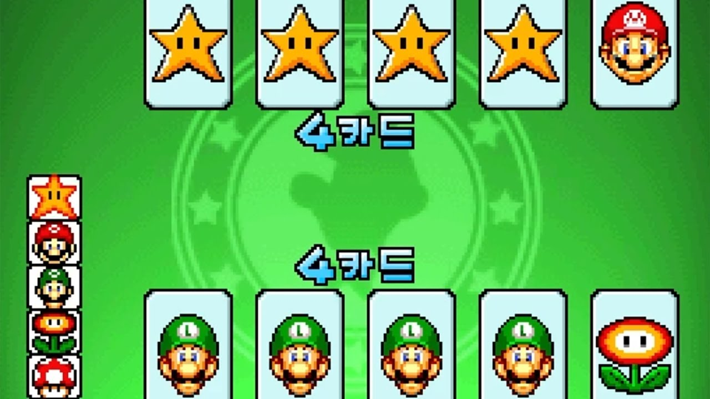
6종류의 카드(스타, 마리오, 루이지, 플라워, 버섯, 구름)로 플레이하며,
상대보다 높은 점수를 내면 승리합니다. 승리하면 "베팅한 코인 수 × 족보의 배수"만큼 코인을 획득하며
패배시 베팅한 코인을 잃습니다. 카드를 잘 조합해서 최대한 많은 코인을 모아보세요!
특징 또는 장단점
멀티 플레이 지원
닌텐도DS 장치의 무선통신 기능을 사용하여 2명부터 최대 4명까지 함께 플레이 가능합니다.
마리오vs루이지
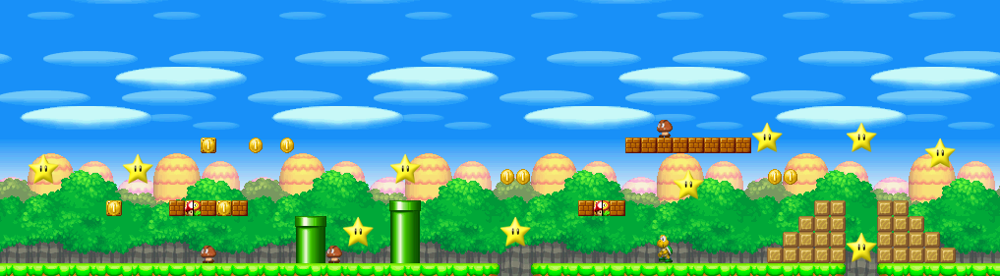
승리에 필요한 스타의 개수를 먼저 채우는 플레이어가 승리하게 됩니다.
스타는 일정 시간마다 맵 어딘가에 등장합니다. 서로 아이템이나 맵의 요소들을 사용해 공격할 수 있으며,
공격을 받았을 경우 스타를 떨어뜨리게 됩니다.
미니게임
플레이어들과 위에서 언급했던 미니게임들을 진행할 수 있으며, 플레이어는 하고싶은
미니게임을직접 고르거나 랜덤한 미니게임이 나오도록 설정할 수 있습니다.
승리시 점수를 얻게되며, 가장 먼저 200점 이상을 모은 플레이어가 승리하게 됩니다.
다양한 게임 장르로의 파생
슈퍼마리오64 DS
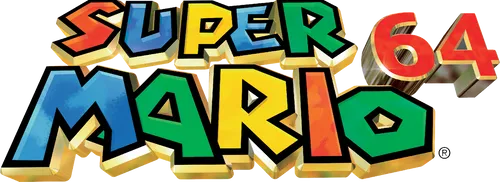
원작 슈퍼마리오64를 리메이크하여 닌텐도DS로 출시했습니다.
마리오64는 마리오 시리즈 최초의 3D작품으로 맵을 자유롭게 뛰어다니며
각종 그림 세계를 탐험하여 스타를 모아 보스인 쿠파에게 도전할 수 있습니다.
마리오파티 DS
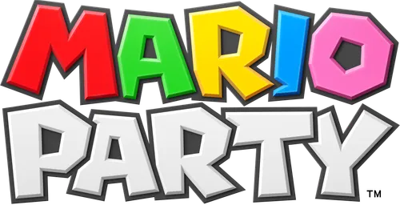
마리오와 보드게임을 합친 작품입니다. 주사위를 사용하여 보드게임판에서 경주를 하며
점수를 얻어 승리하는 것이 목표이며, 턴마다 진행되는 미니게임을 통해서도 점수를 얻을 수 있습니다.
마리오카트 DS
마리오 시리즈에 등장하는 캐릭터들을 주인공으로 한 레이싱 게임입니다.
평범한 방향 조작만이 아닌 드리프트를 활용하여 코너를 돌고 순간 가속을
할 수 있으며, 아이템을 사용할 수도 있습니다.
어떤 영향 tmi
1. 닌텐도 게임 시장의 활성화
'뉴 슈퍼마리오 브라더스'는 닌텐도 DS의 인기를 크게 끌어올렸으며,
닌텐도 DS의 주요 타이틀중 하나로 자리잡아 많은 사람들이 닌텐도 DS를 접하게 됐습니다.
이 게임의 성공은 닌텐도 DS 콘솔의 판매 증가로 이어졌습니다.
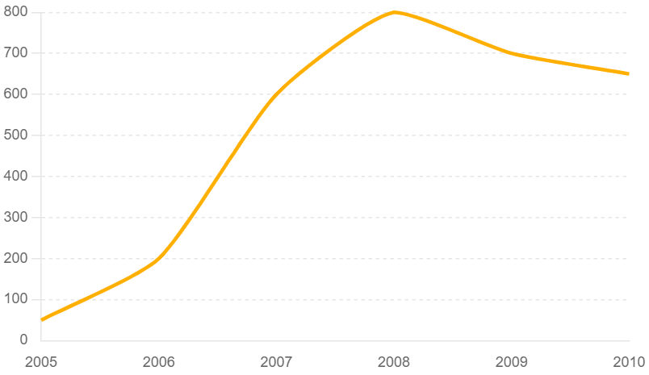
y: 판매량(천) / x:년도
이 그래프는 '뉴 슈퍼마리오 브라더스'가 발매된 2007년 이후 닌텐도 DS의 인기가 크게 상승했음을 잘 보여줍니다.
2. 닌텐도 게임 산업의 성장 촉진
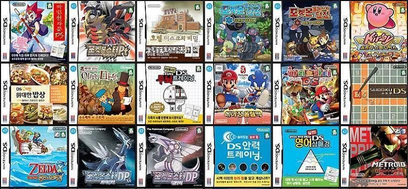
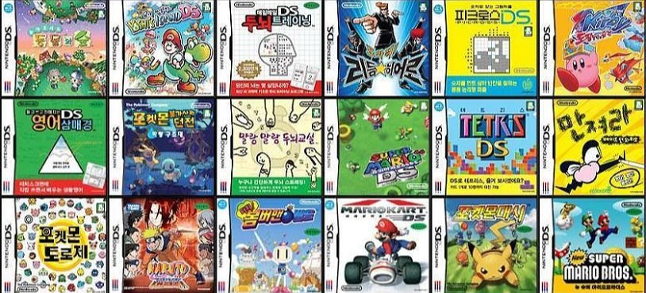
'뉴 슈퍼마리오 브라더스'가 크게 성공하면서 다른 게임 개발사들이
더 많은 닌텐도DS 게임을 개발하고 출시했습니다.게임 개발사들은
더 나은 그래픽, 사운드, 게임플레이, 메커니즘을 개발하기 위해 노력했고,
이는 게임 산업 전체의 기술 발전으로 이어졌습니다.
3. 닌텐도 게임 관련 상품의 활성화
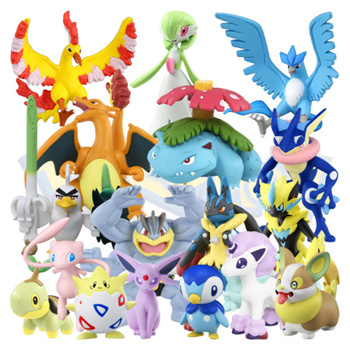
닌텐도DS 기기 판매량 및 게임 판매량 뿐만이 아닌 닌텐도 게임과 관련된
다양한 상품들이 출시되었습니다. 때문에 게임산업 외에도
의류, 액세서리 등등 관련된 산업의 활성화를 촉진했습니다